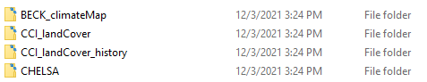
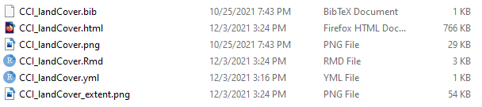

cataloguing data
cataloguing-data.RmdDocumenting data
This section describes how to document datasets and how to integrate them in the MAS data catalog.. masDMT makes this registration easier, providing tools to automatically generate complex html records.
When creating a descriptor for a new dataset, we should keep the catalog organization in mind, Let’s peek under the hood. If we look at where posts are stored, we will see something like shown below. As you can see, each dataset has one folder with the its unique identifier. For example, the land cover dataset of the climate change initiative (CCI) is recorded as CCI_landCover, the same ID we can provide to list_data to find the path to the corresponding rasters (see this article for examples on data access).

Keeping our focus on the CCI_landCover dataset, we can obtain further insights on which files a dataset contains. As shown below, this record contains the following files:
-
Rmd: needed byRmarkdowncreate anhtml -
html: Knited from theRmdfile, used by the website -
CCI_landCover.png: Preview image of the dataset -
CCI_landCover_extent.png: Image showing the spatial extent of the dataset -
CCI_landCover.bib: Bibtex file with literature reference of dataset -
CCI_landCover.yml: Configuration file with metadata of dataset

Here, the most important thing is the yaml file. This is where we enter metadata required by the catalog, which will be used when automatically generating the Rmd, html, and extent image files. The preview image and the bibtex are optional.
Creating a new metadata record
As a practical example, let’s create a new metadata record for a hypothetical dataset called land cover. First we use build_descriptor() to setup the data descriptor, creating a file structure we can later feed to the data catalog. We will give this dataset the unique identifier land_cover, and provide a bibtex with its literature references and a preview image.
# specify arguments
path = '/metadata/' # path to directory where to create metadata record
id = 'land_cover' # uique dataset identifier
bib = '/data/bibtex.bib' # path to bibtex
img = '/data/preview.bib' # path to preview image
# run function to build dataset repository
build_descriptor(path, id, bibtex=bib, preview=img)
As seen below, the output consists of a folder names land_cover, containing several files with the same name. This includes the bibtex and preview image we provided, together with a yaml file.

Documenting metadata
The yaml is copied from within masDMT, and specifies all fields that need completion. The table below lists those fields and provides their description. Notice that some fields have predefined keywords that must be followed.
| field | description |
|---|---|
| title | Unique identifier |
| short_description | Short dataset description, used in preview and included in the extended metadata record |
| long_description | Long dataset description, used only in the extended metadata record |
| documentation | Link to documentation file, or e-mail of whom to reach |
| data_access | link of where to access the data from, or e-mail of whom to reach |
| license | Dataset license |
| categories | Keyword specifying the topic of the dataset, which is used to refine the search for records |
| status | Status of the dataset (one of available, developing, or planned) |
| format | Format of the dataset (one of Grid, Vector, or Table) |
| spatial_resolution | Spatial resolution, expressed as a mixture of a numeric element and a character (e.g. 30m) |
| temporal_resolution | Temporal resolution of dataset (e.g. yearly, multiyear snapshot) |
| temporal_range | Start and end of the period covered by the dataset, expressed as dates (yyyy-mm-dd) |
| spatial_extent | Bounding coordinates of the dataset (min x, max x, min y, max y) |
| subdatasets | List and description of subdatsets |
The subdatset field extends further, with one entry for each subdataset. Below we have three examples on how to fill the subdataset section. Note that every subdataset requires a variable description, but additional metadata depends on the nature of the input dataset.
Example A: Continuous raster
As shown in the example below, all continuous raster datasets demand is information on its minimum and maximum values. This requires us to add a value_range field, which we can describe with the minimum and maximum values, providing a scaling factor in parenthesis when applicable.
subdatasets:
continuous_raster:
variable: continuous raster dataset
content:
value_range: 1...10 (scale factor 0.01)Example B: Categorical raster
Categorical raster datasets require some documentation effort. Here, we need to provide a field for each raster value, describing it with the adequate class.
subdatasets:
categorical_raster:
variable: categorical raster dataset
content:
1: agriculture
2: forest
3: waterExample C: Vector/Table
Vector and tabular datasets impose a similar challenge as categorical rasters. Here, we need to provide each column as a field, and accopany that field with an adequate description.
subdatasets:
vector_or_table:
variable: tabular dataset
content:
column_1: description of column 1
column_2: description of column 2The examples above demonstrate the documentation of individual subdatasets. However, we can add more than one by following the example below.
subdatasets:
vector_dataset_1:
variable: tabular dataset
content:
column_1: description of column 1
column_2: description of column 2
vector_dataset_2:
variable: tabular dataset
content:
column_1: description of column 1
column_2: description of column 2Knitting documentation
Before we can add our metadata record into the data catalog, we first need to knit it into an html. To assure the standardization of metadata records, we can se knit_descriptor(). This function reads the yaml file we previously documented, and translates it into a fully formated Rmarkdown file, which is then translated into html.
# use "path" and "id", specified when calling build_descriptor()
knit_descriptor(file.path(path, paste0(id, '.yml')))